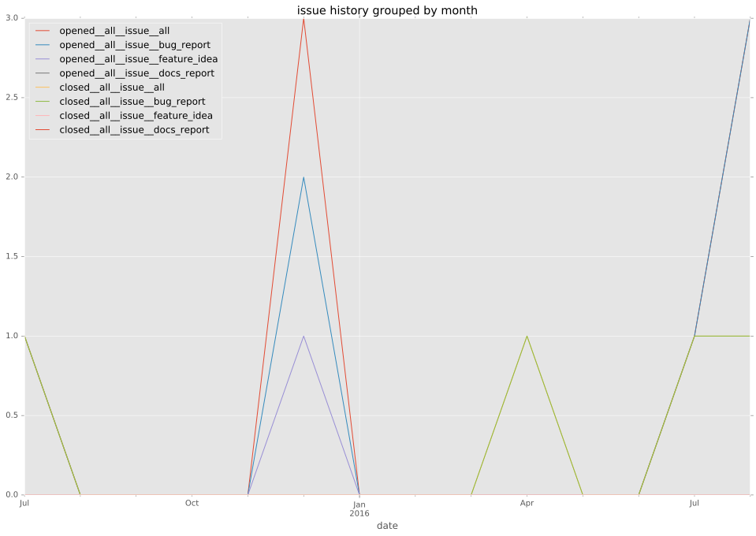
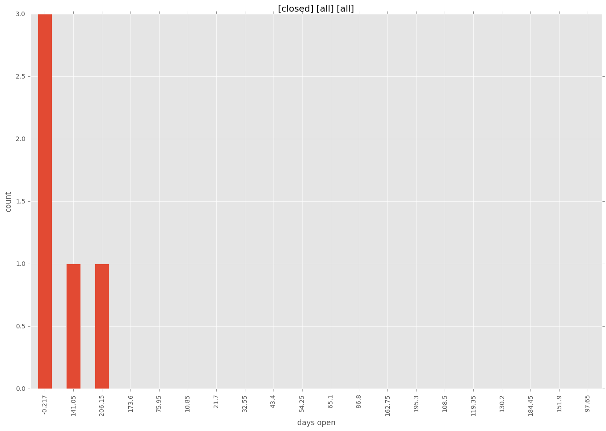
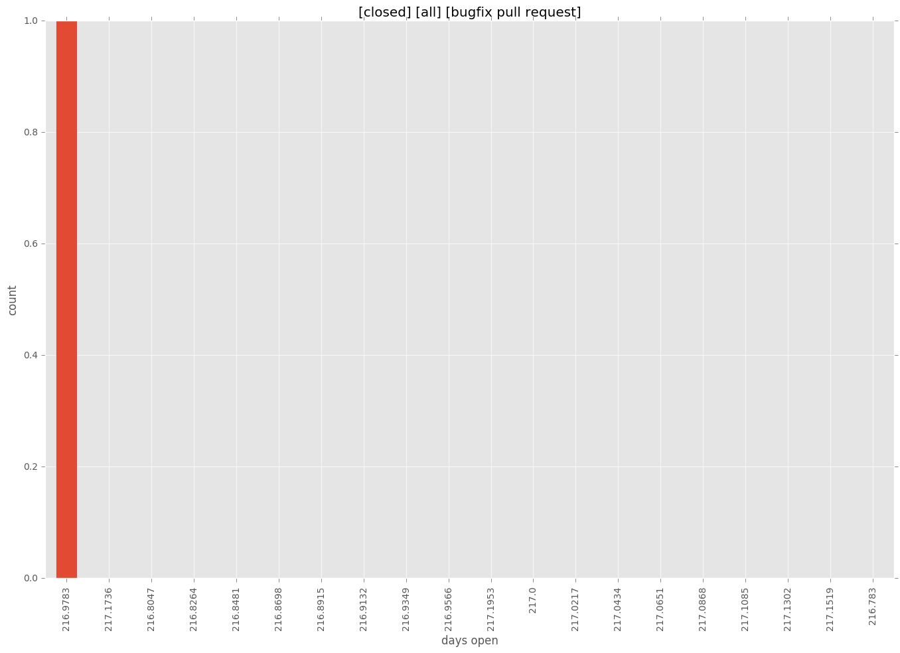
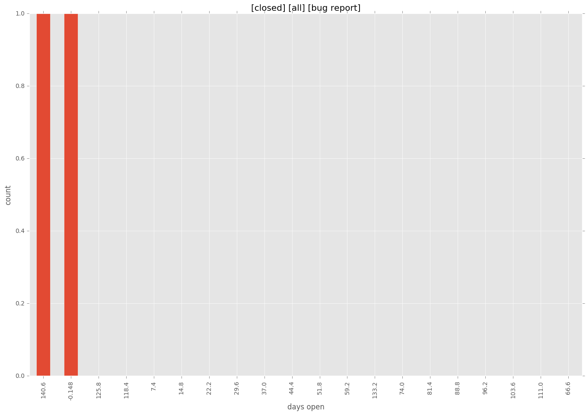

total issue counts
all: 2
pullrequest: 1
bugfix pull request: 1
feature idea: 1
issue: 8
bug report: 5
issue history

days open by issue type
all
count: 5
std: 102.89314846
min: 0
max: 217
median: 0.0
mean: 73.0
pullrequest
count: 0
std: nan
min: nan
max: nan
median: nan
mean: nan
bugfix pull request
count: 1
std: nan
min: 217
max: 217
median: 217.0
mean: 217.0
feature idea
count: 0
std: nan
min: nan
max: nan
median: nan
mean: nan
issue
count: 0
std: nan
min: nan
max: nan
median: nan
mean: nan
bug report
count: 2
std: 104.651803616
min: 0
max: 148
median: 74.0
mean: 74.0
closures grouped by total days open


